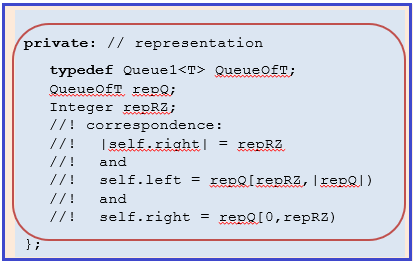

1.1 Get the L3Starter Download
|
|
1.2 Create the L3 Project in Visual Studio
1.3 Add the .cpp files and Build
1.4 About Driver.cpp in the L3 Project
|
The primary objective of this lab is to provide you experience working with:
Specifics - Part1 - Initial Configuration of List2.hpp
2.2.1) Navigate to the folder: C:\CppDevSp19\components\Include\List
2.2.2) Create a duplicate of List1.hpp, name it: List2.hpp
2.2.3) Modify List2.hpp as follows
2.2.3a) In the top part of the List2.hpp file:
|
|
2.2.3b) In the public part:
|
|
|  | 2.2.3c) In the private part:
|
2.2.3d) In the member function part:
|
|
template <class T>
wostream& operator<<(wostream& os, List2<T>& s)
{
#ifdef _DEBUG
os << "(" << s.repRZ << "," << s.repQ << ")";
#else
// existing code remains, except last line
// which is the return line, put it below #endif
#endif
return os; // make sure return line is still last line
} // operator <<
|
2.2.3e) Modify the operator << as shown to the right This modified implementation of operator << uses conditional compilation to:
|
Specifics - Part 2 - Modifying driver.cpp
In Visual Studio, open driver.cpp and make the following changes near the top of the file:
Specifics - Part 3 - Layering a Component
In Visual Studio, open List2.hpp and implement the member functions:
Important Restrictions:
Specifics - Part 4 - Obey the correspondence, What it Means
| Client of replaceRightFront - Obeying the correspondence |
// Example client typedef List2<Integer> IntList; Integer y; IntList s1; // code that modifies s1 and y // Incoming s1 = (<18,15,27>,<25,10>) and y = 37 s1.replaceRightFront(y); // Outgoing s1 = (<18,15,27>,<37,10>) and y = 25 |
Part 5 - Design by Contract - Example
| List2 implementation of replaceRightFront Implemented Using Design by Contract Use This Engineering Technique |
List2 implementation of replaceRightFront Implementation Fails to Use Design by Contract Also Known As: Defensive Programming Do Not Use This Approach |
template <class T>
void List2<T>::replaceRightFront(T& x)
{
repQ.replaceFront(x);
} // replaceRightFront
|
template <class T>
void List2<T>::replaceRightFront(T& x)
{
if (repQ.length() > 0) {
repQ.replaceFront(x);
} // end if
} // replaceRightFront
|
For unused variables and code remaining anywhere in List2.hpp
The the private part (internal representation) as described in Section 2.2.3c Specifics (above)
6 points off for each incorrect operation listed in the check list below that does not meet its ensures clause, not to exceed 60 points
Upload L3's completed List2.hpp file to the L1 Moodle assignment